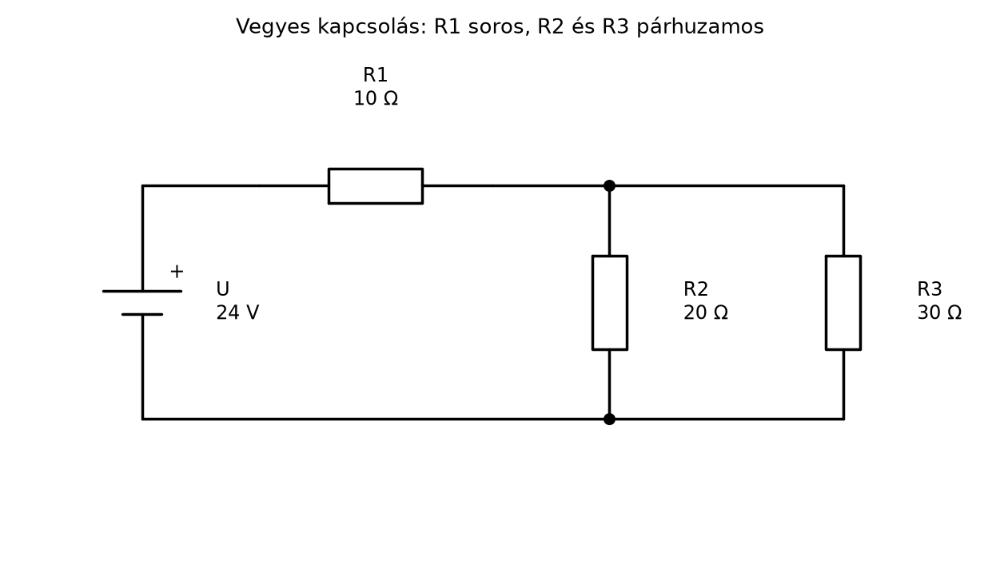
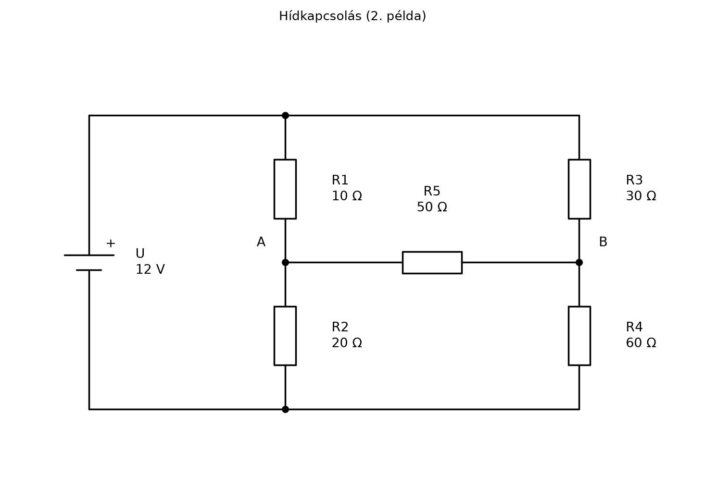

Villanyszerelőként gyakran találkozol olyan kapcsolással, amelyben
nemcsak soros vagy párhuzamos elemek szerepelnek, hanem a kettő
egyszerre. Gondolj például egy kapcsolószekrény jelzőáramkörére, ahol
több visszajelző lámpa párhuzamosan van kötve, de eléjük egy közös
előtét-ellenállás kerül sorosan; vagy egy ipari fűtőpanelre, ahol két
fűtőbetét párhuzamosan, egy harmadik pedig velük sorosan dolgozik. A
feladat ilyenkor az, hogy meghatározd az eredő ellenállást, a teljes
áramfelvételt, és az egyes elemeken eső feszültségeket és áramokat. E
nélkül nem tudod megmondani, hogy mekkora teljesítmény jut egy-egy
fogyasztóra, és nem tudod ellenőrizni, hogy a kapcsolás megfelel-e a
tervezett üzemállapotnak.
4.3.2 Szemléletes kép
Az alábbi kapcsolásban egy
tápegység táplál három ellenállást:
sorosan, míg
és
párhuzamosan van kötve. Az ilyen hálózatot nevezzük vegyes
kapcsolásnak.

Vegyes kapcsolás: R1 soros, R2 és R3
párhuzamos - 24 V tápegység, R1=10 Ω, R2=20 Ω, R3=30 Ω. A pontok a
csomópontokat jelölik.
A rajzon jól látható, hogy az
és
két közös csomóponttal rendelkezik: a felső kapcsuk közös, az alsó
kapcsuk szintén közös. Ezért ezek párhuzamosak. Az
pedig sorosan kapcsolódik ehhez a párhuzamos csoporthoz, mert a
párhuzamos részre jutó teljes áram keresztülfolyik rajta.
4.3.3 Definíciók és egyszerűsítési
stratégia
Definíció. Vegyes kapcsolásnak nevezzük az olyan
ellenállás-hálózatot, amely legalább egy soros és legalább egy
párhuzamos csoportot tartalmaz.
Definíció. Csomópont a hálózatban az a pont, ahol
legalább három vezeték vagy alkatrész-kivezetés találkozik. A
csomópontok felismerése segít eldönteni, hogy két elem soros vagy
párhuzamos kapcsolatban van-e.
Szabály. A vegyes hálózat egyszerűsítésének
lépései:
Rajzold le vagy jelöld be a feszültségforrás kivezetéseit, és keresd
meg a táplált hálózat két kapcsát.
Jelöld be a csomópontokat. Ez segít felismerni az azonos feszültségű
pontokat.
Keress tisztán soros csoportokat: olyan ellenállásokat, amelyeken
azonos áram folyik, és köztük nincs csomópont.
Keress tisztán párhuzamos csoportokat: olyan ellenállásokat,
amelyeknek mindkét kivezetése ugyanahhoz a két csomóponthoz
kapcsolódik.
Helyettesítsd a talált csoportot egyetlen eredő ellenállással a
korábban tanult képletek szerint:
soros:
,
párhuzamos:
,
illetve két ellenállásnál
.
Ismételd az eljárást, amíg a hálózat egyetlen ellenállássá nem
egyszerűsödik. Ez az eredő ellenállás.
Az eredőből számítsd ki a teljes áramot, majd lépésenként,
visszafelé haladva bontsd ki a részáramokat és részfeszültségeket.
Rajzátrendezés. Sok kapcsolási rajzon a hálózat
bonyolultabbnak látszik, mint amilyen valójában. A csomópontok
áthelyezhetők, a vezetékek nyújthatók vagy rövidíthetők, ha közben a
kapcsolatok nem változnak. Két pont akkor van azonos csomóponton, ha
ellenállás (alkatrész) nélküli vezeték köti össze őket – akár
elágazással is. Rajzold át a hálózatot úgy, hogy a csomópontok világosak
legyenek.
4.3.4 Kidolgozott példák
4.3.4.1 1. példa: soros és
párhuzamos csoport egyszerűsítése
A fenti kapcsolás adatai:
,
,
,
.
Megoldás:
Felismerjük, hogy
és
párhuzamos:
Az eredő ellenállás:
A teljes áram:
Az
feszültsége:
A párhuzamos csoport feszültsége:
Ugyanezt kapjuk a csoport eredőjéből is:
.
Az egyes ágak áramai:
Ellenőrzés: a párhuzamos csomópontban a befolyó és elfolyó áramok
összege egyenlő:
A kerekítésből adódó eltérés elfogadható. ∎
4.3.4.2 2. példa: kiegyenlített
hídkapcsolás
A hídkapcsolás négy ellenállásból és egy hídágból áll: az
–
az egyik, az
–
a másik soros ág, a két ág közös tápfeszültségen van, és az
hídág a két ág középpontját (A és B) köti össze. Sokszor a rajz
szimmetrikusnak tűnik, de a hídágat csak akkor hagyhatjuk el, ha a híd
kiegyenlített.

Hídkapcsolás (2. példa) - Bal ág: R1
felül, R2 alul, középpontja A; jobb ág: R3 felül, R4 alul, középpontja
B; az R5 hídág az A és B pont között. U = 12 V.
A híd akkor kiegyenlített, ha az A és a B pont potenciálja egyenlő,
mert ekkor az
két végén nincs feszültség, így áram sem folyik rajta. Az
és az
feszültsége a két ág feszültségosztójából:
Az
egyenlőségből
,
azaz
,
amiből a kiegyenlítettség feltétele:
Ekkor a hídágban
()
nem folyik áram, ezért elhagyható, és a kapcsolás két párhuzamos ággá
rendeződik.
Adott:
,
,
,
,
,
.
Ellenőrzés:
tehát a híd kiegyenlített.
A két ág eredője:
A teljes eredő:
A teljes áram:
Az ágáramok:
és a hídág árama
.
∎
Ha a híd nem kiegyenlített, a hídágat nem szabad elhagyni. Ilyenkor a
hálózat már nem egyszerűsíthető tisztán soros-párhuzamos csoportokká; a
megoldáshoz a Kirchhoff-törvények és
hálózatszámítás alfejezetben bemutatott általános módszert
használjuk.
4.3.5 Teljesítmény-mérleg mint
ellenőrzés
Minden vegyes hálózat számításánál erős ellenőrzés a
teljesítmény-mérleg. A forrás által leadott hatásos teljesítménynek
egyenlőnek kell lennie az ellenállásokon disszipált teljesítmények
összegével:
Ha a kettő nem egyezik, akkor számolási hibát követtünk el.
Az 1. példa adataival, a pontosabb
értéket használva:
A fogyasztói oldal:
Összegük:
A teljesítmény-mérleg tehát zár. ∎
4.3.6 Interaktív kalkulátor
Az alábbi interaktív ábrán az 1. példa egyszerűsítését lépésenként
követheted: a lépés-csúszkával előbb az összevonás (1. csomópontok, 2.
és
párhuzamos eredője:
,
3.
),
majd a visszabontás (4. teljes áram, 5. részfeszültségek, 6. ágáramok,
7. teljesítmény-mérleg) játszható le. Az
,
,
,
értéke is állítható; a számok minden lépésben frissülnek.
Statikus változat (mint a PDF-ben)
Vegyes kapcsolás lépésenkénti egyszerűsítése: eredeti
kapcsolás →
→
,
alatta a visszabontás eredményei
A statikus tartalék ábra a három egyszerűsítési lépést és az
eredménytáblát mutatja:
,
,
,
;
a kalkulátor kimenete
,
,
,
,
.
4.3.7 Valós életbeli
alkalmazás
Egy üzemben a karbantartó azt tapasztalja, hogy egy három
fűtőbetétből álló berendezés nem fűt rendesen. A terv szerint a betétek
mindegyike
névleges ellenállású, és
kapocsfeszültségre tervezték (mindegyik tervezett teljesítménye
,
a háromé
).
A beszerelés során azonban két betétet párhuzamosan, a harmadikat pedig
eléjük sorosan kötötték. A szerelő kiszámolja a viszonyokat.
A két párhuzamos betét eredője:
A teljes kör ellenállása:
A teljes áram:
A párhuzamos csoport feszültsége:
tehát a két párhuzamos betét csak
-ot
kap, a soros betét pedig
-ot.
A párhuzamos betétek mindegyikének teljesítménye így nem a tervezett
,
hanem:
a soros betété
,
a berendezésé összesen
a tervezett
helyett.
A hiba oka a hibás bekötés; a javítás a három betét párhuzamos
kötése, így mindegyik megkapja a teljes
feszültséget.
Továbbvitt eredmény. A vegyes hálózatok lépésenkénti
egyszerűsítése, a csomóponti áramok összegzése és a teljesítmény-mérleg
alkalmazása közvetlenül előkészíti a Kirchhoff-törvények és hálózatszámítás
alfejezetet: ott ugyanezeket a megmaradási elveket mondjuk ki
általánosan, és olyan hálózatokat is meg tudunk oldani, amelyek nem
egyszerűsíthetők soros-párhuzamos csoportokra. Az eredő ellenállás
fogalmát használjuk a Valódi feszültségforrás:
üresjárás, rövidzárás és illesztés alfejezetben is.
4.3.8 Tipikus hibák
Soros és párhuzamos csoport téves felismerése.
Ha két ellenállásnak csak az egyik kivezetése közös, az nem feltétlenül
soros; a párhuzamos kapcsolathoz az kell, hogy mindkét kivezetésük
ugyanahhoz a két csomóponthoz kapcsolódjon. Soros kapcsolatnál az áramuk
közös, és köztük nincs elágazás.
A párhuzamos eredő reciprokának hibás képzése.
Gyakori hiba az
átlagolás, vagy a szorzat/végösszeg felcserélése. A helyes képlet
kettőnél több ellenállásra:
A feszültségosztás hibás alkalmazása. Ha a
párhuzamos csoportot egyetlen helyettesítő ellenállásnak tekintjük, a
feszültségosztást erre a helyettesítő ellenállásra kell alkalmazni. A
hibás
képlet figyelmen kívül hagyja, hogy
és
párhuzamosak, ezért az eredmény téves.
Kiegyenlítetlen hídnál a hídág elhanyagolása. A
hídág elhagyása csak akkor megengedett, ha teljesül a
feltétel. Ellenkező esetben a hídágban áram folyik, és a hálózatot
másként kell megoldani.
Mértékegység-tévesztés. A
és
felcserélése, vagy a
és
összekeverése nagyságrendi hibát okoz. Mindig írd ki a mértékegységeket
minden lépésben.
4.3.9 Önellenőrzés
Igaz vagy hamis? Két ellenállás akkor párhuzamos, ha a kapcsolási
rajzon egymás mellett láthatók.
Számítsd ki két
-os
ellenállás párhuzamos eredőjét!
Az 1. példában
(,
,
,
)
mekkora az
-n
eső feszültség?
Milyen feltétel esetén hagyható el a hídkapcsolás
hídága?
Miért használunk teljesítmény-mérleget az ellenőrzéshez?
4.3.10 Feladatok
1. feladat (A). Adott
,
,
,
,
ahol
és
párhuzamos,
pedig velük soros. Határozd meg az eredő ellenállást, a teljes áramot és
a két párhuzamos ág áramát!
2. feladat (A). Adott
,
,
párhuzamos, és
soros a párhuzamos csoporttal. Számítsd ki az eredő ellenállást, a
párhuzamos csoport feszültségét, valamint az
és
áramát!
3. feladat (B). Három párhuzamos ágat tartalmazó
hálózat: az első ágban
;
a második ágban
soros kapcsolásban
-mal;
a harmadik ágban
.
A tápfeszültség
.
Határozd meg az egyes ágak áramát, és ellenőrizd a
teljesítmény-mérleget!
4. feladat (B). Adott egy hídkapcsolás:
,
,
,
,
,
.
Igazold, hogy a híd kiegyenlített, határozd meg az eredő ellenállást és
a hídág áramát!
5. feladat (C). Egy tanuló az alábbi módon
számította ki az eredőt egy vegyes kapcsolásra:
,
párhuzamos, majd
soros, végül
párhuzamos az egész soros résszel. Azt írta:
,
,
végül 12,5 Ω és 20 Ω párhuzamos eredőjére
-ot
kapott. Hol a hiba? Mennyi a helyes érték?
6. feladat (D). Egy karbantartó megméri egy
fűtőpanel eredő ellenállását a sorkapcsokon:
.
A panel három azonos, egyenként
névleges ellenállású fűtőbetétet tartalmaz. Hogyan vannak bekötve a
betétek? Indokold a mérés alapján!
4.3.11 Megoldások
4.3.11.1 Önellenőrzés –
válaszok
Hamis. A párhuzamos kapcsolat feltétele a két közös csomópont:
mindkét ellenállás mindkét kivezetése ugyanahhoz a két csomóponthoz
kapcsolódik.
.
Az
feszültsége megegyezik a párhuzamos csoport feszültségével, tehát
.
A hídág akkor hagyható el, ha a híd kiegyenlített:
.
A teljesítmény-mérleg azt ellenőrzi, hogy a forrás által leadott
hatásos teljesítmény megegyezik az ellenállásokon disszipált
teljesítmények összegével. Ha eltérés van, akkor valahol számolási hibát
követtünk el.
4.3.11.2 1. feladat megoldása
Párhuzamos eredő:
Teljes eredő:
Teljes áram:
A párhuzamos csoport feszültsége:
Ágáramok:
Ellenőrzés:
.
4.3.11.3 2. feladat megoldása
Párhuzamos eredő:
Teljes eredő:
Teljes áram:
A párhuzamos csoport feszültsége:
Ágáramok:
Ellenőrzés:
.
4.3.11.4 3. feladat megoldása
Az ágak eredői:
A három párhuzamos ág eredője:
Teljes áram:
Ágáramok:
Ellenőrzés:
.
Teljesítmény-mérleg:
A forrás:
.
Fogyasztók:
Összeg:
.
A kerekítési eltérés elfogadható.
4.3.11.5 4. feladat megoldása
Ellenőrizzük a kiegyenlítettséget:
tehát a híd kiegyenlített.
Az ágak:
Eredő:
Teljes áram:
Ágáramok:
A hídág árama:
.
4.3.11.6 5. feladat megoldása
A hiba a párhuzamos eredő kiszámításában van: a tanuló átlagot
számolt
módon, pedig a helyes párhuzamos eredő:
Ezután a soros rész:
Végül
párhuzamosan kapcsolódik ehhez:
A tanuló által kapott
tehát hibás.
4.3.11.7 6. feladat megoldása
Három azonos
-os
ellenállás lehetséges kapcsolásai:
Mind soros:
Kettő soros, a harmadik párhuzamos a soros kettővel:
Kettő párhuzamos, a harmadik soros velük:
Mindhárom párhuzamos:
A mért
érték a mindhárom párhuzamos kapcsolásnak felel meg leginkább; a
kismértékű eltérés a névleges ellenállás tűréséből, a mérővezeték
ellenállásából és a hőmérsékletből adódhat.
4.3.12 Rövid összefoglaló
A vegyes kapcsolások olyan hálózatok, amelyekben soros és párhuzamos
csoportok egyaránt előfordulnak. Az egyszerűsítés során először fel kell
ismerni a csomópontokat, majd a tisztán soros vagy párhuzamos
csoportokat lépésenként egyetlen eredő ellenállássá kell összevonni. A
soros eredő az ellenállások összege, a párhuzamos eredő reciproka az
egyes reciprokok összege. Az eredőből a teljes áram, majd visszafelé
haladva a részfeszültségek és részáramok meghatározhatók. A
hídkapcsolásnál a hídágat csak kiegyenlített híd esetén szabad elhagyni,
ha
.
A számítás ellenőrzésére mindig használjunk teljesítmény-mérleget: a
forrás által leadott hatásos teljesítménynek egyenlőnek kell lennie az
ellenállásokon disszipált teljesítmények összegével. Továbbvitt
eredmény: a vegyes hálózatok lépésenkénti egyszerűsítése, a
csomóponti áramok összegzése és a teljesítmény-mérleg alkalmazása
közvetlenül előkészíti a Kirchhoff-törvények és
hálózatszámítás alfejezetet, ahol ezeket az elveket általánosan,
tetszőleges hálózatokra is kiterjesztjük.
4.3.13 Források és ellenőrzési
hiányok
A fejezet klasszikus elektrotechnikai alapokra épül; a számítások Ohm
törvényén és a soros/párhuzamos kapcsolások szabályain alapulnak. A
hídkapcsolás kiegyenlítettségi feltétele általánosan érvényes. A konkrét
példákban használt ellenállásértékek és feszültségek tanulási célúak;
nem szabványos tervezési értékek. A használt rajzjelek a korábbi
rajzjelekkel foglalkozó alfejezetekben bemutatott MSZ EN 60617 szerinti
gyakorlatot követik.